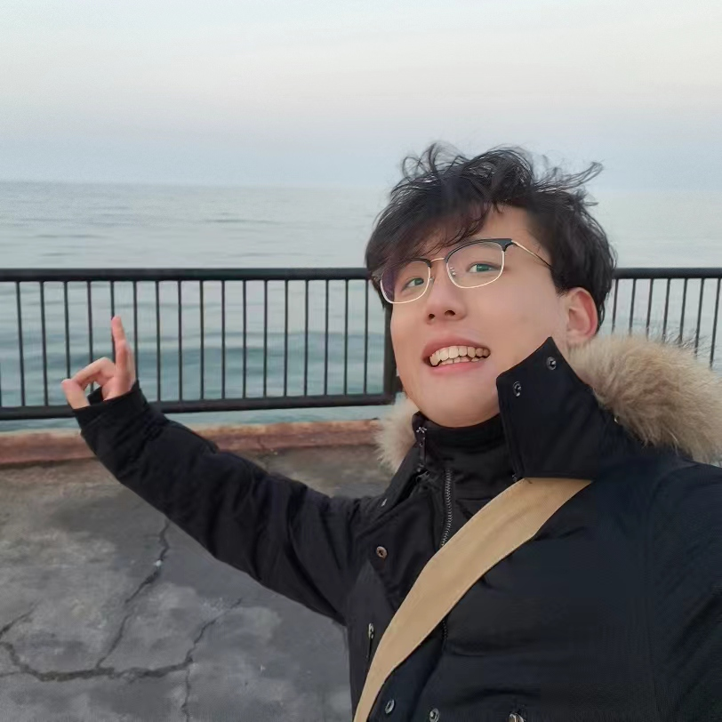

Peiang Zhao (赵沛昂)
|  | M.Sc Student |
Biography
Hi😊, nice to meet you!
Currently I am a M.Sc student of University of Science and Technology of China (USTC), and a member of Medical Imaging, Robotics, Analytic Computing & Learning (MIRACLE) Group, advised by Prof. S. Kevin Zhou.
My research interests are but not limited to AIGC and AI for Healthcare. My recent work focuses on diffusion model for semantic image synthesis and editing. If you are also interested, please feel free to contact me.
I enjoy building beautiful things, such as photography and painting. I have over 50,000 followers on Pixiv and DeviantArt.
Education
M.Sc., Electronic and Information Engineering, University of Science and Technology of China, 2022.09-Present
B.E., Computer Science and Technology, Hefei University of Technology, 2018.09-2022.06
News
[2024.05]
 I am starting a new position as a Research Intern at Tencent!
I am starting a new position as a Research Intern at Tencent! [2023.12] I am nominated for the Suzhou Industrial Park Scholarship!
[2023.06] One paper was accepted to MICCAI 2023.
Work Experience
Research Intern, Tencent, 05.2024-Present
Research Assistant, MIRACLE Lab, University of Science and Technology of China, 09.2022-Present
Research Assistant, National Space Science Center, 06.2021-09.2021
Developer Intern, Computer Vision Group, FITSCO Shanghai, 06.2020-08.2020
Research
Interests
Image & Video Synthesis
Semantic Image Editing
Medical Image Computing
Recent Publications
Image & Video Synthesis
Peiang Zhao, Han Li, Ruiyang Jin, S. Kevin Zhou.
LoCo: Locally Constrained Training-Free Layout-to-Image Synthesis.
in arXiv, 2023.
Medical Image Computing
Peiang Zhao, Han Li, Ruiyang Jin, S. Kevin Zhou.
DiffULD: Diffusive Universal Lesion Detection.
in The 26th International Conference on Medical Image Computing and Computer Assisted Intervention (MICCAI 2023).
Accomplishments
Awards
Outstanding Graduate, Hefei University of Technology, 06.2022
First-Class Scholarship, Hefei University of Technology, 09.2021 & 09.2020
2nd Prize, National Intelligent Car Race for Colledge Students, Chinese Association of Automation, 08.2021 & 11.2020
3rd Prize, “China Software Cup” Software Developing Contest, Ministry of Industry and Information Technology, 08.2021
1st Prize, Competition of Embedded Systems of Anhui Province, Ministry of Industry and Information Technology, 05.2019
Activities
Deputy Director of IDEA Lab, Hefei University of Technology, 05.2019-06.2022
Teaching Assistant, Hefei University of Technology, 09.2021-06.2022